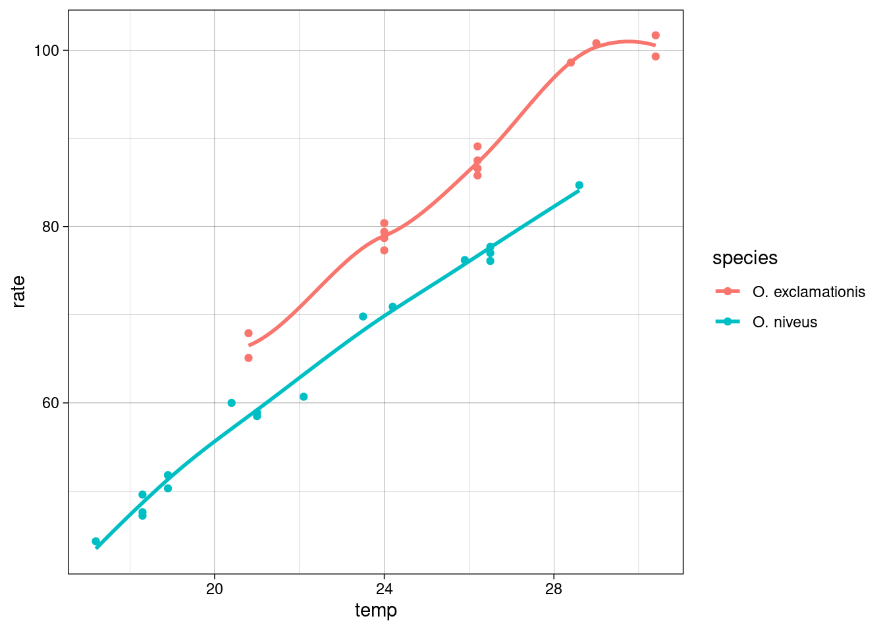

3.1 R formula syntax
We’ll use the trees data set provided in {modeldata} (loaded with {tidymodels}) for demonstration purposes. Tree girth (in inches), height (in feet), and volume (in cubic feet) are provided. (Girth is somewhat like a measure of diameter.)
## [90m# A tibble: 31 x 3[39m
## Girth Height Volume
## [3m[90m<dbl>[39m[23m [3m[90m<dbl>[39m[23m [3m[90m<dbl>[39m[23m
## [90m 1[39m 8.3 70 10.3
## [90m 2[39m 8.6 65 10.3
## [90m 3[39m 8.8 63 10.2
## [90m 4[39m 10.5 72 16.4
## [90m 5[39m 10.7 81 18.8
## [90m 6[39m 10.8 83 19.7
## [90m 7[39m 11 66 15.6
## [90m 8[39m 11 75 18.2
## [90m 9[39m 11.1 80 22.6
## [90m10[39m 11.2 75 19.9
## [90m# … with 21 more rows[39mNote that there is an analytical way to calculate tree volume from measures of diameter and height.


We observe that Girth is strongly correlated with Volume
## [90m# A tibble: 3 x 4[39m
## term Girth Height Volume
## [3m[90m<chr>[39m[23m [3m[90m<dbl>[39m[23m [3m[90m<dbl>[39m[23m [3m[90m<dbl>[39m[23m
## [90m1[39m Girth [31mNA[39m 0.519 0.967
## [90m2[39m Height 0.519 [31mNA[39m 0.598
## [90m3[39m Volume 0.967 0.598 [31mNA[39mShame on you 😉 if you didn’t guess I would make a scatter plot given a data set with two variables.

We can fit a linear regression model to predict Volume as a function of the other two features, using the formula syntax to save us from some typing.
##
## Call:
## lm(formula = Volume ~ ., data = trees)
##
## Coefficients:
## (Intercept) Girth Height
## -57.9877 4.7082 0.3393How would you write this without the formula syntax?

If we want to get fancy with our pipes (%>%), then we should wrap our formula with formula()
##
## Call:
## lm(formula = formula(Volume ~ .), data = .)
##
## Coefficients:
## (Intercept) Girth Height
## -57.9877 4.7082 0.3393Interaction terms are easy to generate.
##
## Call:
## lm(formula = Volume ~ Girth * Height, data = trees)
##
## Coefficients:
## (Intercept) Girth Height Girth:Height
## 69.3963 -5.8558 -1.2971 0.1347Same goes for polynomial terms.
##
## Call:
## lm(formula = Volume ~ Girth + I(Girth^2) + Height, data = trees)
##
## Coefficients:
## (Intercept) Girth I(Girth^2) Height
## -9.9204 -2.8851 0.2686 0.3764Excluding columns is intuitive.
##
## Call:
## lm(formula = Volume ~ . - Height, data = trees)
##
## Coefficients:
## (Intercept) Girth
## -36.943 5.066The intercept term can be removed conveniently.
##
## Call:
## lm(formula = Volume ~ . + 0, data = trees)
##
## Coefficients:
## Girth Height
## 5.0440 -0.4773To illustrate another convenience provided by formulas, let’s add a categorical column.
trees2 <- trees
set.seed(42)
trees2$group = sample(toupper(letters[1:4]), size = nrow(trees2), replace = TRUE)
trees2## [90m# A tibble: 31 x 4[39m
## Girth Height Volume group
## [3m[90m<dbl>[39m[23m [3m[90m<dbl>[39m[23m [3m[90m<dbl>[39m[23m [3m[90m<chr>[39m[23m
## [90m 1[39m 8.3 70 10.3 A
## [90m 2[39m 8.6 65 10.3 A
## [90m 3[39m 8.8 63 10.2 A
## [90m 4[39m 10.5 72 16.4 A
## [90m 5[39m 10.7 81 18.8 B
## [90m 6[39m 10.8 83 19.7 D
## [90m 7[39m 11 66 15.6 B
## [90m 8[39m 11 75 18.2 B
## [90m 9[39m 11.1 80 22.6 A
## [90m10[39m 11.2 75 19.9 D
## [90m# … with 21 more rows[39mEncoding the categories as separate features is done auto-magically with the formula syntax.
##
## Call:
## lm(formula = Volume ~ ., data = trees2)
##
## Coefficients:
## (Intercept) Girth Height groupB groupC groupD
## -55.2921 4.6932 0.3093 -1.8367 -0.0497 0.6462Under the hood, this is done by model.matrix().
## (Intercept) Girth Height groupB groupC groupD
## 1 1 8.3 70 0 0 0
## 2 1 8.6 65 0 0 0
## 3 1 8.8 63 0 0 0
## 4 1 10.5 72 0 0 0
## 5 1 10.7 81 1 0 0
## 6 1 10.8 83 0 0 1
## 7 1 11.0 66 1 0 0
## 8 1 11.0 75 1 0 0
## 9 1 11.1 80 0 0 0
## 10 1 11.2 75 0 0 13.1.1 Recap
Purposes of R model formula:
The formula defines the columns that are used by the model.
The standard R machinery uses the formula to encode the columns into an appropriate format.
The roles of the columns are defined by the formula.